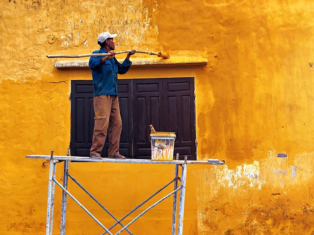

Palvelut
Taloyhtiön julkisivu on kuin käyntikortti, joka antaa ensivaikutelman laadusta ja ylläpidosta. Kuvittele, kuinka mukavalta tuntuu lähestyä taloa, jossa julkisivu loistaa uudessa maalissaan verrattuna haalistuneisiin ja kuluneisiin pintoihin. Ensivaikutelma vaikuttaa merkittävästi talon arvoon ja sen asukkaiden tyytyväisyyteen!
Kyse ei ole pelkästään ulkonäöstä, vaan oikein tehty julkisivumaalaus parantaa taloyhtiön kestävyyttä ja suojaa rakennusta. Maalipinta toimii tärkeänä suojana seinämateriaaleille sääolosuhteilta, kuten kosteudelta ja UV-säteilyltä. Säännöllinen ylläpito ja ammattimaisesti toteutettu maalaus takaavat, että taloyhtiö pysyy hyvässä kunnossa pitkään.
Onnistunut julkisivumaalaus ja sisätilojen uudistus
Julkisivun ja sisätilojen maalausprojekti taloyhtiössä tai yksityiskodissa vaatii luotettavan ja osaavan kumppanin. Me Maalaus ja Tapetointi Oy olemme erikoistuneet tarjoamaan juuri sinun kohteellesi sopivat ratkaisut – olipa kyseessä taloyhtiön julkisivun kunnostus, sisätilojen maalaus tai tapetointi.
Yli 15 vuoden kokemuksella ja yli 600 onnistuneella projektilla takaamme sujuvan prosessin ja laadukkaan lopputuloksen. Meillä on laaja joukko ammattitaitoisia maalareita ja tapetoijia, jotka pystyvät mukautumaan tiukkoihinkin aikatauluihin. Käytämme vain parhaita materiaaleja ja tekniikoita varmistaaksemme kestävän ja näyttävän pinnan joka kohteeseen.
Ulko- ja sisämaalaus
Miksi valita meidät?
Laadukkaat materiaalit ja työnjälki – Käytämme vain huippuluokan maaleja ja tapetteja, jotka kestävät aikaa ja kulutusta. Joustavat aikataulut – Suuret resurssimme mahdollistavat nopeatkin projektit ilman, että laatu kärsii. Kattava palvelu – Hoidamme kaiken taloyhtiön julkisivumaalauksista yksityiskotien sisätöihin, sisämaalauksista tapetointeihin. Pitkä kokemus – Yli 15 vuoden aikana olemme toteuttaneet satoja projekteja, mikä takaa luotettavan ja sujuvan palvelun. Olipa kyseessä sitten yksityiskoti, taloyhtiö tai suurempi kohde, meiltä saat kattavat maalaus- ja tapetointipalvelut ammattitaidolla.